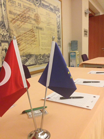
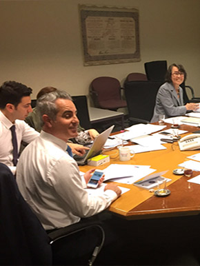

This project is co-financed by the
European Union and the
Republic of Turkey.
European Union and the
Republic of Turkey.
Project Activities
Component 1
Accounting
* A three day seminar on international accounting standards was carried out at the premises of the Capital Markets Board in Ankara between the 28th and the 30th of March 2016. Having a high rate of participation, the seminar delivered by local and international short term experts under the project, welcomed 60 CMB experts on average from various departments. Furthermore a one day “training of trainers” event was conducted for related CMB experts on 22 March 2017.
* The first day of the seminar was delivered by short term experts (STEs), Mr. Galin Berbenkov, Mrs. Sinem Arı Öz and Mrs. İlkay Alpkaya Ünlükal. The first day was dedicated to EU accounting directives, the conceptual framework, International Accounting Standards (IAS) 1, 11, 18, 40 and International Financial Reporting Standards (IFRS) 1 and 15. The second and third days of the seminar were delivered by STEs Mrs. Sinem Arı Öz and Mr. Brian Connolly. Day two was dedicated to IFRS 3, 10,11,12, 13 and IAS 27, 28, and 36 and day three to IAS 12, 21, 23, 32, 37, 39 and IFRS 7 and 9.
* In relation to the subject a study visit was organised in France on 8-12 February 2016 with the participation of related CMB experts.


Auditing
A three day seminar dedicated to International Auditing Standards (ISAs) was carried out at the premises of the Capital Markets Board in Ankara on 3-5 October 2016. The seminar delivered by two local and international short-term experts with the participation of approximately thirty-eight (38) CMB experts. The seminar was followed by a “training of trainers” session which took place on the 6th of October 2016.
The seminar was delivered by short-term experts Ms. Isabelle Tracq-Sengeissen and Ms. İlkay T. Alpkaya. It covered topics on Audit Regulation in the EU, ISA 300, Planning an Audit of Financial Statements, ISA 315, Identifying and Assessing the Risks of Material Misstatement through Understanding the Entity and its Environment, ISA 330, The Auditor’s Responses to Assessed Risks, ISA 320, Materiality in Planning and Performing an Audit, ISA 230, Audit Documentation, ISA 500, Audit Evidence, ISA 501, Audit Evidence-Specific Considerations for Selected items, ISA 530, Audit Sampling and Other Means of Testing, ISA 540, Auditing Accounting Estimates, Including Fair Value Accounting Estimates, and Related Disclosures, ISA 570, Going Concern, ISA 620, Using the Work of an Auditor’s Expert, ISA 550, Related Parties, ISA 700, Forming an Opinion and Reporting on Financial Statements, and ISA 706, Emphasis of Matter Paragraphs and Other Matter Paragraphs in the Audit Reports on day 3 and ISA 701, Communicating Key Audit Matters in the Independent Auditor’s Report (New ISA), and ISA 705, Modifications to the Opinion in the Independent Auditor’s Report.
* In relation to the subject a study visit was organised in the UK on 12-16 December 2016 with the participation of related CMB experts.
Accounting
* A three day seminar on international accounting standards was carried out at the premises of the Capital Markets Board in Ankara between the 28th and the 30th of March 2016. Having a high rate of participation, the seminar delivered by local and international short term experts under the project, welcomed 60 CMB experts on average from various departments. Furthermore a one day “training of trainers” event was conducted for related CMB experts on 22 March 2017.
* The first day of the seminar was delivered by short term experts (STEs), Mr. Galin Berbenkov, Mrs. Sinem Arı Öz and Mrs. İlkay Alpkaya Ünlükal. The first day was dedicated to EU accounting directives, the conceptual framework, International Accounting Standards (IAS) 1, 11, 18, 40 and International Financial Reporting Standards (IFRS) 1 and 15. The second and third days of the seminar were delivered by STEs Mrs. Sinem Arı Öz and Mr. Brian Connolly. Day two was dedicated to IFRS 3, 10,11,12, 13 and IAS 27, 28, and 36 and day three to IAS 12, 21, 23, 32, 37, 39 and IFRS 7 and 9.
* In relation to the subject a study visit was organised in France on 8-12 February 2016 with the participation of related CMB experts.

Auditing
A three day seminar dedicated to International Auditing Standards (ISAs) was carried out at the premises of the Capital Markets Board in Ankara on 3-5 October 2016. The seminar delivered by two local and international short-term experts with the participation of approximately thirty-eight (38) CMB experts. The seminar was followed by a “training of trainers” session which took place on the 6th of October 2016.
The seminar was delivered by short-term experts Ms. Isabelle Tracq-Sengeissen and Ms. İlkay T. Alpkaya. It covered topics on Audit Regulation in the EU, ISA 300, Planning an Audit of Financial Statements, ISA 315, Identifying and Assessing the Risks of Material Misstatement through Understanding the Entity and its Environment, ISA 330, The Auditor’s Responses to Assessed Risks, ISA 320, Materiality in Planning and Performing an Audit, ISA 230, Audit Documentation, ISA 500, Audit Evidence, ISA 501, Audit Evidence-Specific Considerations for Selected items, ISA 530, Audit Sampling and Other Means of Testing, ISA 540, Auditing Accounting Estimates, Including Fair Value Accounting Estimates, and Related Disclosures, ISA 570, Going Concern, ISA 620, Using the Work of an Auditor’s Expert, ISA 550, Related Parties, ISA 700, Forming an Opinion and Reporting on Financial Statements, and ISA 706, Emphasis of Matter Paragraphs and Other Matter Paragraphs in the Audit Reports on day 3 and ISA 701, Communicating Key Audit Matters in the Independent Auditor’s Report (New ISA), and ISA 705, Modifications to the Opinion in the Independent Auditor’s Report.
* In relation to the subject a study visit was organised in the UK on 12-16 December 2016 with the participation of related CMB experts.

Component 2
Alternative Investment Fund Managers
* The gap analysis between Turkish and EU regulation applicable to Alternative Investment Fund Managers (AIFM) started during the first week of March 2016. The CMB working group, worked on this subject matter with with an international short term expert.
* The gap analysis was followed by 4 weeks of drafting sessions during the month of April 2016, with the technical assistance of the STE. The drafting of sessions with the CMB working group were carried out at the premises of the Capital Markets Board in Ankara.
* In relation to the subject a study visit was organised in Germany on 7-11 November 2016 with the participation of the related CMB working group.
A two-day training seminar dedicated to the regulation of AIFM was carried out in April 2017 at the premises of the Capital Markets Board in Ankara with the attendance of approximately 50 CMB experts.
Market Abuse
* The module was kicked-off in April 2016 with an analysis of the gaps between the Turkish and EU regulations dealing with market abuse (market manipulation, insider trading etc.). The CMB working group and STE Ms. Marguerite Yates worked on the gap analysis over a period of one month.
* The gap analysis was followed by drafting sessions conducted in May 2016, with the technical assistance of Ms. Marguerite Yates and the participation of the CMB working group.
* In relations to the subject a study visit was organized in Italy on 19-23 September 2016 with the participation of the related CMB working group.
* A two day training seminar dedicated to Market Abuse was organized in February 2017 at the Istanbul The Marmara Pera Hotel with the attendance of approximately 25 CMB experts.

Capital Adequacy
* Kick-off on the gap analysis of the Capital Adequacy (CRD) module under component 2 hit-start in early January 2016. The working group dedicated one month together with the international short term expert (STE) Mr. Radek Lastovicka in order to define the gaps between the Turkish and European regulations on Capital Adequacy.
* Drafting sessions followed by the gap analysis was carried out by international STE Mr. Manfred Reinertz with support/assistance of Mr. Lastovicka in March 2016. The assigned five weeks drafting of sessions were carried out at the premises of the Capital Markets Board in Ankara with the working group four hours a day to draft the new regulation.
* The seminar on component 2, Capital Adequacy was carried out in the first week of June 2016 at the premises of the Capital Market Boards in Ankara for two days for approximately 50 CMB experts.
Transparency Regulation
* The Transparency (TRA) module under component 2 was kicked-off in May 2016 with the start of the gap analysis, which was performed by STE Mr. Charilaos Mertzanis, international short term expert (STE) and a CMB working group.
* Drafting sessions, which took place at the premises of the Capital Markets Board in Ankara between the 21st and 29th of July 2016, gathered 8 CMB experts belonging to the TRA working group. Together, CMB and TAT experts drafted amendments to the CMB’s communiqués to increase convergence towards EU standards in this area.
* In relation to the subject a study visit was organised in Greece on 5-9 December 2016 with the participation of the related CMB working group.
* A two-day seminar dedicated to transparency requirements was organized in March 2017 at the premises of the Capital Market Boards in Ankara. Approximately fifty (50) CMB experts have attended the Seminar.


Contact
Phone: +90 (312) 292 90 90
 Adress: Eskisehir Yolu 8. Km No: 156, 06530 Ankara
Adress: Eskisehir Yolu 8. Km No: 156, 06530 Ankara
Adress: Eskisehir Yolu 8. Km No: 156, 06530 Ankara